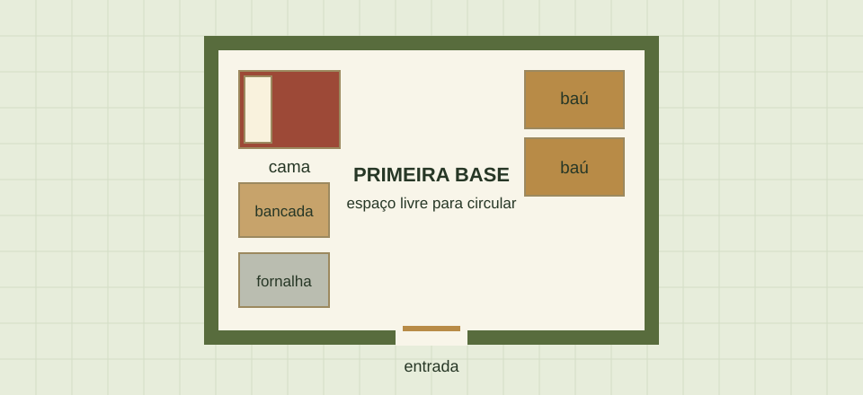

01 / Planejamento
Uma base pequena já funciona
Depois de sobreviver à primeira noite, a vontade pode ser construir uma casa enorme. Mas vale começar com um espaço que seja fácil de terminar: um abrigo fechado, iluminado e com os itens de uso diário por perto.
A ideia deste guia é montar uma base simples perto de madeira e de uma fonte de água. Assim, fica mais fácil guardar materiais, preparar comida e voltar das explorações. A decoração pode entrar aos poucos, conforme os recursos forem sobrando.

02 / Recursos
O que separar antes de construir
Não é preciso reunir tudo de uma vez. Estes materiais ajudam nas primeiras melhorias:
- Madeira: para tábuas, portas, baús e a bancada de trabalho.
- Pedregulho: para a fornalha e ferramentas de pedra.
- Carvão ou carvão vegetal: para preparar tochas e iluminar o interior.
- Lã e tábuas: para fazer uma cama quando esses recursos estiverem disponíveis.
- Comida: para manter a exploração e a coleta de materiais.
03 / Construção
Uma ordem para não se perder
Separar a construção em etapas evita gastar o dia só pensando no formato da casa.
- Escolher um terreno com espaço para o abrigo e uma pequena plantação futura.
- Levantar paredes, colocar um teto e fechar a entrada com uma porta.
- Iluminar o interior e conferir se ficaram aberturas nas paredes.
- Colocar a bancada e a fornalha próximas para facilitar o uso.
- Guardar os recursos nos baús, separando blocos, ferramentas e alimentos.
- Colocar a cama, se já tiver os materiais, e dormir nela para definir o ponto de renascimento no Mundo Superior.
Antes de ampliar a casa, confira se o básico está pronto: abrigo, iluminação e espaço para guardar os itens.